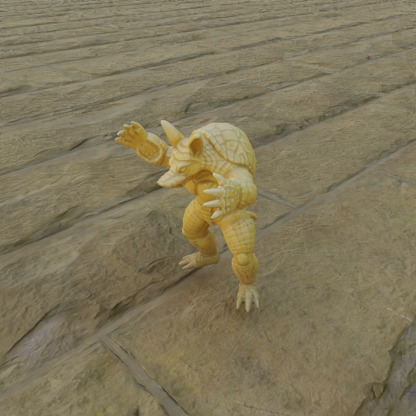
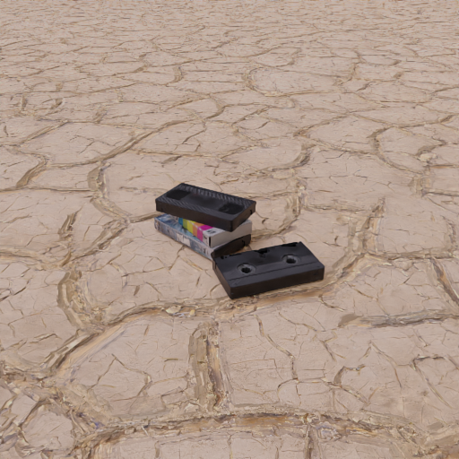

GenLit: Probing Image-to-Video Models with Controllable Relighting
Additional results on In-the-wild Images. The ground-truth light position of each is visualized below each result.
Back to project page
Input
IC-Light Condition
IC-Light Prediction
Ours
GT

